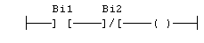

Each SFC transitions must have a boolean condition that indicates if the transition can be crossed. The condition is a boolean expression that can be programmed either in ST or LD language.
In ST language, enter a boolean expression. In can be a complex expression including function calls and parenthesis.
bForce AND (bAlarm OR min (iLevel, 1) <> 1)
In LD language, the condition is represented by a single rung. The coil at the end of the rung represents the transition and should have no symbol attached.
